| Catalog | overS0_2 |
|---|---|
| Author | Jaqcui Gilchrist, 2018/09/27 |
| Description | stress overshoot: overshoot=0.2 |
| Fault/Def Model | Fault Model 3.1, Geologic |
| Slip Velocity | 1.0 m/s |
| Average Element Area | 1.35 km^2 |
| Length | 9,543,741 events in 498,709 years |
| Frictional Params | a=0.001, b=0.008, (b-a)=0.007, ddotEQ=1 |
| Scatter | 2-D Hist |
|---|---|
| 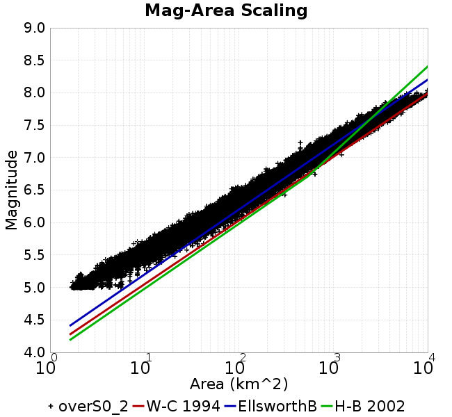 |  |
| Scatter | 2-D Hist |
|---|---|
| 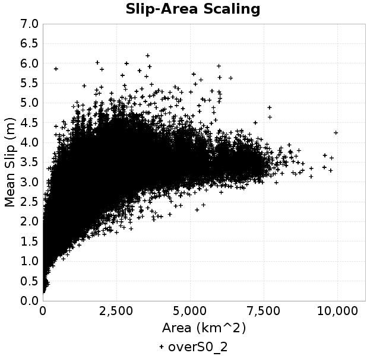 |  |
| Scatter |  |
|---|---|
| Distance/Velocity |  |
| M≥6 | M≥6.5 | M≥7 | M≥7.5 |
|---|---|---|---|
 |  |  |  |
| M≥6 | M≥6.5 | M≥7 | M≥7.5 | |
|---|---|---|---|---|
| Elements | 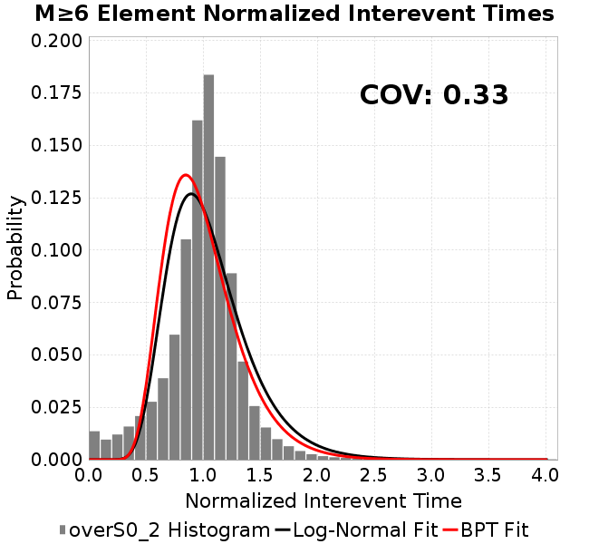 |  | 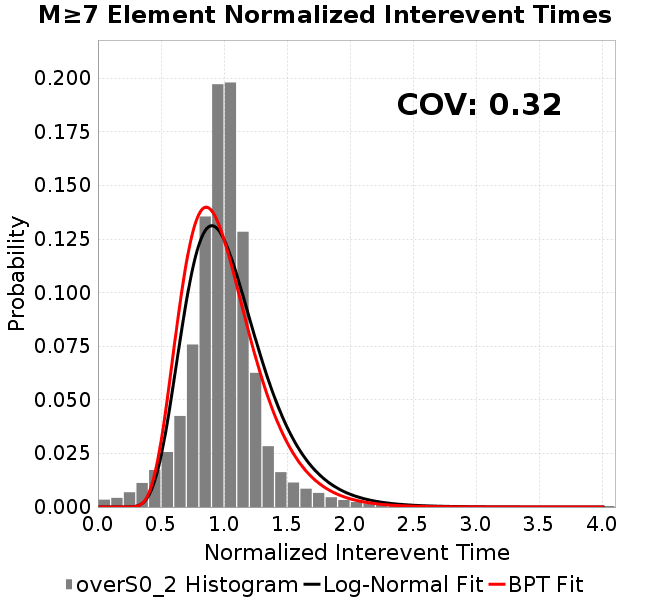 |  |
| Subsections |  | 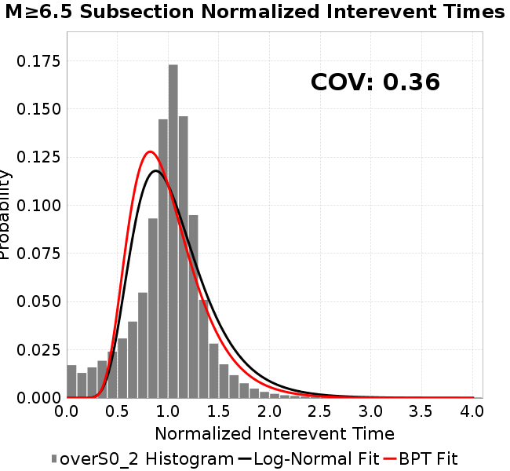 | 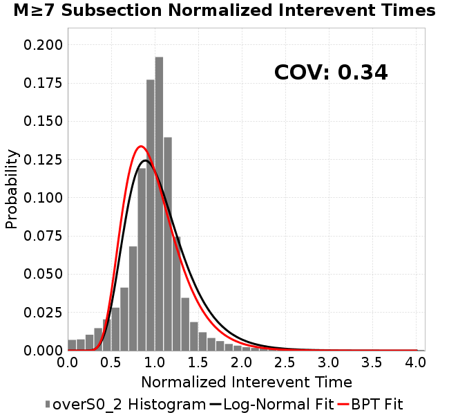 |  |
| Sections | 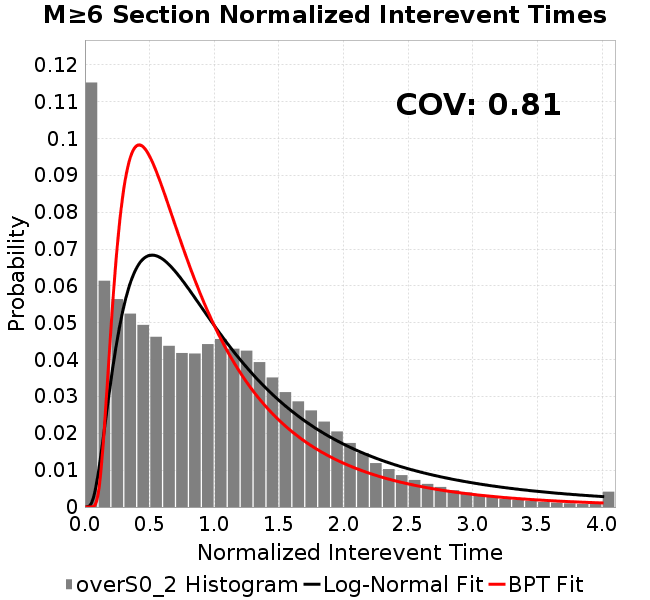 | 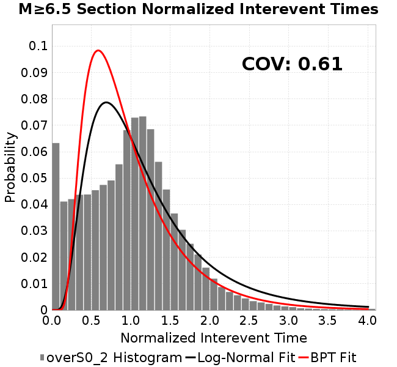 |  |  |
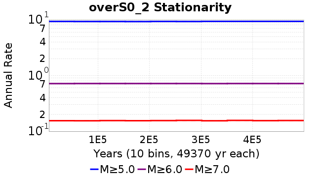
| Min Mag | Scatter | 2-D Hist |
|---|---|---|
| M≥6.0 | 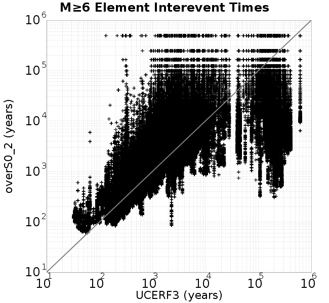 | 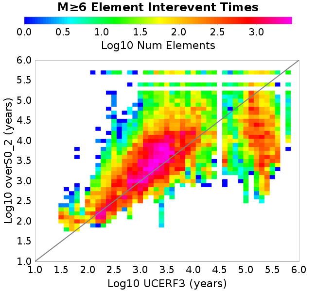 |
| M≥6.5 | 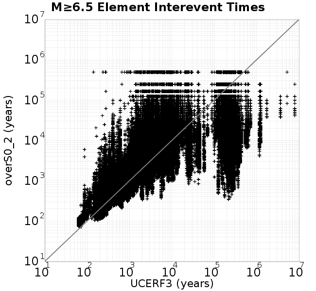 |  |
| M≥7.0 |  |  |
| M≥7.5 |  | 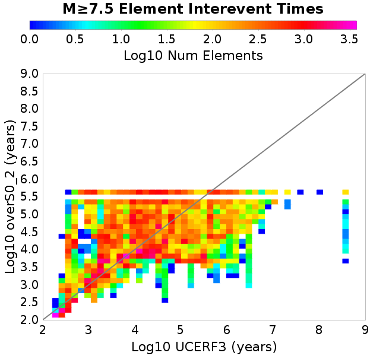 |
Subsections participate in a rupture if at least 20.0 % of its area ruptures
| Min Mag | Scatter | 2-D Hist |
|---|---|---|
| M≥6.0 |  | 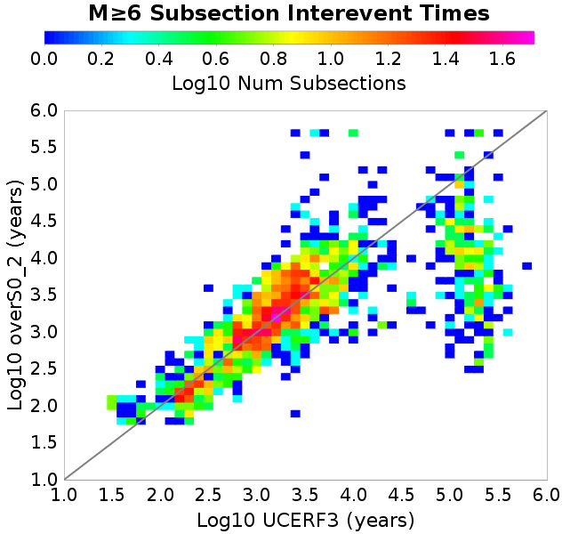 |
| M≥6.5 |  | 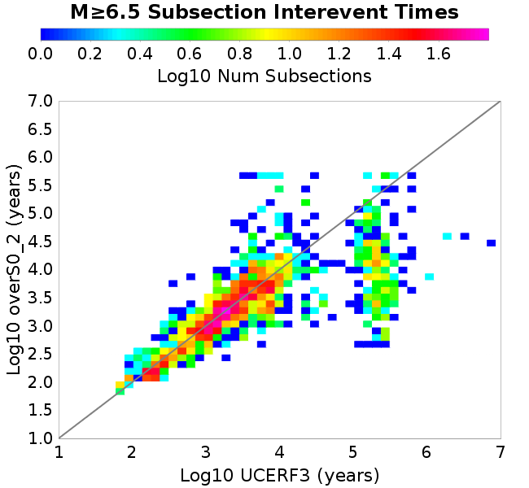 |
| M≥7.0 |  |  |
| M≥7.5 |  |  |
These plots use the 5 paleoseismic sites identified in Biasi & Scharer (2019) on the Hayward, N. SAF, S. SAF, and SJC faults. By default, a rupture is counted at a paleo site if the nearest element (at the surface) slips any amount. We also alternatively apply a probability of detection model. Those results are marked as 'Prob. Filtered'.
Paleoseismic sites table:
| Site Name | Data MRI (yr) | Data Annual Rate | Catalog MRI (yr) | Catalog Annual Rate | Catalog Occurences | Prob Filtered Catalog MRI (yr) | Prob Filtered Catalog Annual Rate | Prob Filtered Catalog Occurences |
|---|---|---|---|---|---|---|---|---|
| HOG | 191.00 | 0.005235602 | 355.99 | 0.0028090894 | 1387 | 359.99 | 0.0027778784 | 1371.58 |
| FRA | 119.00 | 0.008403362 | 116.03 | 0.008618159 | 4254 | 121.36 | 0.008240161 | 4067.44 |
| COA | 181.00 | 0.005524862 | 171.35 | 0.0058360687 | 2882 | 183.38 | 0.0054530227 | 2692.87 |
| SCZ | 106.00 | 0.009433962 | 118.65 | 0.008428063 | 4160 | 136.97 | 0.0073006055 | 3603.45 |
| TYS | 329.00 | 0.0030395137 | 324.99 | 0.0030769731 | 1519 | 366.36 | 0.0027295295 | 1347.51 |
| TOTAL | 31.61 | 0.0316373 | 34.76 | 0.028767098 | 14202 | 37.74 | 0.026497899 | 13081.72 |
Paleoseismic Plots:
 |  |
|---|
Open interval probabilities table:
| Open Interval (yr) | Catalog Probability | Catalog Poisson Probability | Prob. Filtered Catalog Probability | Prob. Filtered Catalog Poisson Probability | Data Poisson Probability |
|---|---|---|---|---|---|
| 10.00 | 0.9715012 | 0.75000834 | 0.9756137 | 0.76722205 | 0.72878754 |
| 20.00 | 0.89750975 | 0.56251246 | 0.9114717 | 0.5886297 | 0.53113127 |
| 30.00 | 0.79239094 | 0.42188904 | 0.8181966 | 0.4516097 | 0.3870819 |
| 40.00 | 0.6744408 | 0.3164203 | 0.7115737 | 0.34648493 | 0.28210047 |
| 50.00 | 0.5564205 | 0.23731785 | 0.6018681 | 0.2658309 | 0.2055913 |
| 60.00 | 0.43358153 | 0.17799036 | 0.4862635 | 0.20395133 | 0.14983238 |
| 70.00 | 0.3216506 | 0.13349426 | 0.37739784 | 0.15647596 | 0.10919597 |
| 80.00 | 0.22620325 | 0.1001218 | 0.27993003 | 0.120051816 | 0.079580665 |
| 90.00 | 0.14899844 | 0.07509218 | 0.19823352 | 0.0921064 | 0.057997398 |
| 100.00 | 0.10047704 | 0.056319762 | 0.14190061 | 0.07066607 | 0.04226778 |
| 110.00 | 0.060501285 | 0.04224029 | 0.09297034 | 0.054216564 | 0.030804234 |
| 120.00 | 0.03039719 | 0.03168057 | 0.052423622 | 0.041596144 | 0.022449743 |
| 130.00 | 0.014933648 | 0.023760691 | 0.028892217 | 0.03191348 | 0.016361093 |
| 140.00 | 0.0052308817 | 0.017820716 | 0.011839178 | 0.024484728 | 0.011923761 |
| 150.00 | 0.0013821186 | 0.013365685 | 0.004451647 | 0.018785223 | 0.008689889 |
| 160.00 | 5.63598E-4 | 0.010024375 | 0.0018196113 | 0.014412438 | 0.0063330824 |
| 170.00 | 3.5757475E-4 | 0.0075183646 | 0.0011285073 | 0.011057541 | 0.0046154717 |
| 180.00 | 0.0 | 0.005638836 | 4.347684E-4 | 0.008483589 | 0.0033636983 |
| 190.00 | 0.0 | 0.004229174 | 2.2162344E-4 | 0.006508797 | 0.0024514215 |
| 200.00 | 0.0 | 0.0031719157 | 7.861688E-5 | 0.0049936925 | 0.0017865654 |
| 210.00 | 0.0 | 0.0023789632 | 4.8829996E-5 | 0.0038312713 | 0.0013020267 |
| 220.00 | 0.0 | 0.0017842422 | 3.067572E-5 | 0.002939436 | 9.489008E-4 |
| 230.00 | 0.0 | 0.0013381965 | 1.3105809E-5 | 0.0022552002 | 6.915471E-4 |
| 240.00 | 0.0 | 0.0010036585 | 0.0 | 0.0017302393 | 5.039909E-4 |
These plots use the full set of UCERF3 paleoseismic sites. By default, a rupture is counted at a paleo site if the nearest element (at the surface) slips any amount. We also alternativeslyapply a probability of detection model. Those results are marked as 'Prob. Filtered'.
Paleoseismic sites table:
| Site Name | Data MRI (yr) | Data Annual Rate | Catalog MRI (yr) | Catalog Annual Rate | Catalog Occurences | Prob Filtered Catalog MRI (yr) | Prob Filtered Catalog Annual Rate | Prob Filtered Catalog Occurences |
|---|---|---|---|---|---|---|---|---|
| SSanAndreasBurroFlats | 205.44 | 0.0048677 | 201.39 | 0.0049655326 | 2452 | 230.88 | 0.00433133 | 2138.72 |
| SSanAndreasIndio | 277.37 | 0.0036053 | 168.14 | 0.0059474823 | 2937 | 178.82 | 0.0055921557 | 2761.51 |
| SSAFMCreek1000Palms | 261.33 | 0.0038266 | 1681.09 | 5.9485156E-4 | 293 | 2400.13 | 4.1664392E-4 | 204.92 |
| NSanAndreasFortRoss | 306.28 | 0.003265 | 183.14 | 0.005460172 | 2696 | 185.98 | 0.005376997 | 2654.93 |
| NSanAndreasNorthCoast | 263.87 | 0.0037898 | 173.55 | 0.005762052 | 2845 | 178.62 | 0.0055984245 | 2764.22 |
| CalaverasfaultNorth | 618.05 | 0.001618 | 164.78 | 0.0060688066 | 2995 | 237.38 | 0.0042125927 | 2078.74 |
| ElsinoreTemecula | 1019.16 | 9.812E-4 | 662.87 | 0.0015085805 | 744 | 690.53 | 0.0014481557 | 714.22 |
| ElsinoreWhittier | 3196.93 | 3.128E-4 | 1437.91 | 6.9545227E-4 | 343 | 1533.64 | 6.520428E-4 | 321.48 |
| SSAFCarrizoBidart | 114.71 | 0.0087179 | 118.20 | 0.008460012 | 4177 | 122.01 | 0.008196048 | 4046.69 |
| SanJacintoHogLake | 311.78 | 0.0032074 | 355.99 | 0.0028090894 | 1387 | 360.12 | 0.0027768833 | 1371.1 |
| PuenteHills | 3506.31 | 2.852E-4 | 4726.16 | 2.1158833E-4 | 105 | 5212.61 | 1.9184254E-4 | 95.18 |
| SanGregorioNorth | 1019.06 | 9.813E-4 | 376.52 | 0.0026558968 | 1311 | 391.96 | 0.0025513086 | 1259.28 |
| SanJacintoSuperstition | 508.26 | 0.0019675 | 1200.57 | 8.329343E-4 | 412 | 1283.89 | 7.788807E-4 | 385.16 |
| SSanAndreasWrightwood | 106.04 | 0.0094304 | 150.68 | 0.0066363676 | 3276 | 152.40 | 0.0065615433 | 3239.05 |
| SSanAndreasPitmanCanyon | 173.48 | 0.0057643 | 142.92 | 0.0069970614 | 3454 | 156.60 | 0.0063856724 | 3152.2 |
| SSanAndreasPlungeCreek | 205.36 | 0.0048695 | 347.26 | 0.0028797216 | 1421 | 431.89 | 0.0023154023 | 1142.3 |
| FrazierMountianSSAF | 148.57 | 0.0067307 | 116.03 | 0.008618159 | 4254 | 121.36 | 0.0082401 | 4067.41 |
| NSanAndreasSantaCruzSeg | 109.84 | 0.0091041 | 118.65 | 0.008428063 | 4160 | 137.06 | 0.0072961533 | 3601.32 |
| RodgersCreek | 325.31 | 0.003074 | 165.14 | 0.006055381 | 2990 | 226.59 | 0.0044132946 | 2179.22 |
| GreenValleyMasonRoad | 293.31 | 0.0034094 | 1770.76 | 5.647302E-4 | 279 | 2373.54 | 4.2131153E-4 | 208.09 |
| HaywardfaultNorth | 318.34 | 0.0031413 | 360.43 | 0.0027744654 | 1370 | 371.91 | 0.002688844 | 1327.67 |
| HaywardfaultSouth | 167.57 | 0.0059677 | 324.99 | 0.0030769731 | 1519 | 366.37 | 0.0027294767 | 1347.52 |
| Compton | 2658.16 | 3.762E-4 | 5921.93 | 1.6886376E-4 | 84 | 6572.88 | 1.5214032E-4 | 75.61 |
| SSanAndreasCoachella | 178.45 | 0.0056037 | 171.35 | 0.0058360687 | 2882 | 183.45 | 0.0054511703 | 2691.96 |
| ElsinoreGlenIvy | 179.12 | 0.0055828 | 561.09 | 0.0017822571 | 880 | 605.60 | 0.0016512533 | 815.24 |
| GarlockCentralallevents | 1434.93 | 6.969E-4 | 621.25 | 0.0016096607 | 794 | 632.19 | 0.0015818074 | 780.25 |
| NSanAndreasAlderCreek | 869.64 | 0.0011499 | 183.55 | 0.005448016 | 2690 | 186.57 | 0.0053600585 | 2646.56 |
| SSanAndreasPallettCreek | 149.30 | 0.006698 | 150.32 | 0.0066525782 | 3284 | 152.11 | 0.0065742116 | 3245.31 |
| GarlockWesternallevents | 1230.16 | 8.129E-4 | 812.50 | 0.0012307724 | 608 | 835.50 | 0.0011968855 | 591.23 |
| ElsinoreFaultJulian | 3250.98 | 3.076E-4 | 1233.22 | 8.1088644E-4 | 400 | 1258.36 | 7.9468684E-4 | 392.01 |
| TOTAL | 9.08 | 0.1101451 | 14.02 | 0.07133896 | 35221 | 15.56 | 0.06425453 | 31723.4 |
Paleoseismic Plots:
| 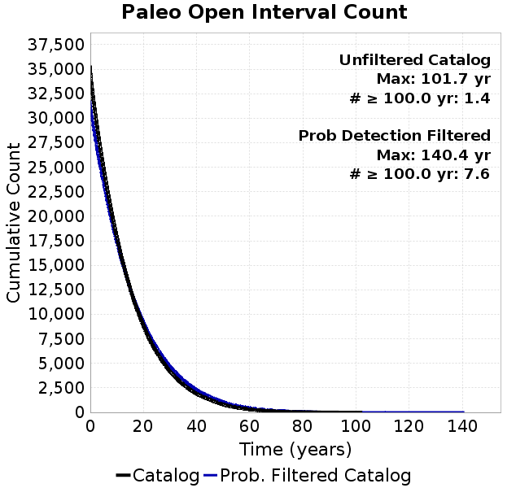 |  |
|---|
Open interval probabilities table:
| Open Interval (yr) | Catalog Probability | Catalog Poisson Probability | Prob. Filtered Catalog Probability | Prob. Filtered Catalog Poisson Probability | Data Poisson Probability |
|---|---|---|---|---|---|
| 10.00 | 0.84966725 | 0.48998055 | 0.8727322 | 0.52595204 | 0.33238843 |
| 20.00 | 0.5852074 | 0.24008094 | 0.6348921 | 0.27662554 | 0.110482074 |
| 30.00 | 0.35466647 | 0.11763499 | 0.41220993 | 0.14549176 | 0.036722966 |
| 40.00 | 0.19596724 | 0.057638858 | 0.24471712 | 0.07652169 | 0.012206289 |
| 50.00 | 0.097779706 | 0.02824192 | 0.1342064 | 0.040246736 | 0.004057229 |
| 60.00 | 0.042583328 | 0.01383799 | 0.06653672 | 0.021167852 | 0.001348576 |
| 70.00 | 0.017121982 | 0.0067803464 | 0.030907638 | 0.011133275 | 4.4825108E-4 |
| 80.00 | 0.0072832904 | 0.0033222379 | 0.014232289 | 0.0058555687 | 1.4899348E-4 |
| 90.00 | 0.0020701513 | 0.0016278318 | 0.004826187 | 0.0030797482 | 4.952371E-5 |
| 100.00 | 2.8564417E-4 | 7.9760596E-4 | 0.0016447763 | 0.0016197999 | 1.6461108E-5 |
| 110.00 | 0.0 | 3.9081142E-4 | 4.543976E-4 | 8.51937E-4 | 5.4714824E-6 |
| 120.00 | 0.0 | 1.9148999E-4 | 2.3968714E-4 | 4.48078E-4 | 1.8186574E-6 |
| 130.00 | 0.0 | 9.382637E-5 | 4.48781E-5 | 2.3566752E-4 | 6.045007E-7 |
| 140.00 | 0.0 | 4.5973095E-5 | 3.2264618E-6 | 1.2394981E-4 | 2.0092905E-7 |
| 150.00 | 0.0 | 2.2525923E-5 | 0.0 | 6.5191656E-5 | 6.678649E-8 |
We first create a tapered moment release time series for the entire catalog. Each event's moment is distributed across a 25 year Hanning (cosine) taper. Here is a plot of a random 2,000 year section of this time series:

We then compute Welch's power spectral density estimate on the entire time series. Results are plotted below, with a Poisson randomization of the catalog also plotted in gray as a control. Significant deviations above the Poisson model indicate synchronization at that period.

A_1 = 0.001
fA = .1
B_1 = 0.008
muSlipAmp_1 = .0
muSlipInvDist_1 = 1.0
cohesion = 0.0
Dc_1 = 1.0000000000000000818e-05
mu0_1 = 0.6
ddotStar_1 = 9.9999999999999995475e-07
ddotAB_1 = 9.9999999999999995475e-07
alpha_1 = 0.0
theta0_1 = 200000000
tau0_1 = 55.1
sigma0_1 = 100
sigmaFracPin = .5
lowSigmaAction = 1
maxThetaPin = 1.0e13
ddotEQ_1 = 1
ddotEQFname =
stressOvershootFactor = 0.2
lameLambda = 30000
lameMu = 30000
slowSlip_1 = 0
nEq = 100000000000
KZeroFrac = 0
muPin = 1.0
tStart = 0
maxT = 3.16e13
maxWallTime = 169200
maxTrans = 1.0000000000000000159e100
faultFname = UCERF3FM.15km.1km.tri.flt
outFnameInfix = overS0_2
writeTau = 2
writeSigma = 2
writeSlip = 0
writeSlipSpeed = 0
writeState = 0
writeTheta = 2
writePED = 1
writeTransitions = 1
minDtWrite = 0
minDtWriteCoseismic = 0
minDtWriteInterseismic = 0
minMagWrite = 7.7
writeStiffness = 0
stressRateSpecification = 1
dMu3 = 0.01000000000000000
initTauFname =
initSigmaFname =
initThetaFname =
initSlipSpeedFname =
AFname =
BFname =
DcFname =
mu0Fname =
ddotStarFname =
ddotABFname =
alphaFname =
KTauFname = /u/sciteam/gilchris/scratch/stiffness_25a589d/Ktau.25a589d.out
KSigmaFname = /u/sciteam/gilchris/scratch/stiffness_25a589d/Ksigma.25a589d.out
tFailFname =
tauFailFname =
tauDotFname =
sigmaDotFname =
KZeroFname = UCERF3FM.15km.1km.tri.KZero
pinnedFname = UCERF3FM.15km.1km.tri.pin
neighborFname = UCERF3FM.15km.1km.tri.neighbors
stressRateFname =
slowSlipFname =
writePatchFname =
DEBUG = 0
ZBrentUpperBracket = 0
receiverElementAreaFrac = 0.8
receiverElementIntTol = 1.0e-4
receiverElementSubdivisionMax = 4
tgfDist1 = 3
tgfDist1 = 10
lowSigmaAction = 1
highSigmaAction = 0